6. シナリオ2: センサーデータを可視化する-1¶
このシナリオでは、BLEゲートウェイが送信するバイナリデータをLambdaでJSON形式に変換し、トピック名を変えてAWS IoTへパブリッシュします。Webアプリケーションで変換後のトピックをサブスクライブしグラフ表示します。Webアプリケーションは、AWS IoTデバイスととして動作し、JSON形式に変換されたトピックをサブスクライブしてグラフ表示します。
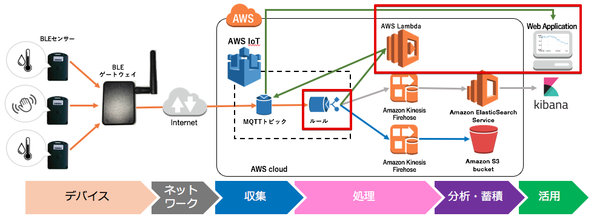6.1. データ変換用のLambda関数を準備する¶
レンジャーシステムズ製のBLEゲートウェイがpublishするトピックは、”sensor/<参加者番号>” でしたが、Lambda関数でJSON形式に変換し、トピック名 “sensor/<参加者番号>/json” として、AWS IoTに再度publishします。
まず、Lambda関数を下記のリンクからPCにダウンロードして下さい。このzipファイルは、後ほどLambdaの設定画面でアップロードします。
サービス一覧から[Lambda] をクリックして開きます。

Lambda関数の設定画面が表示されるので、[Lambda 関数の作成] ボタンをクリックします。
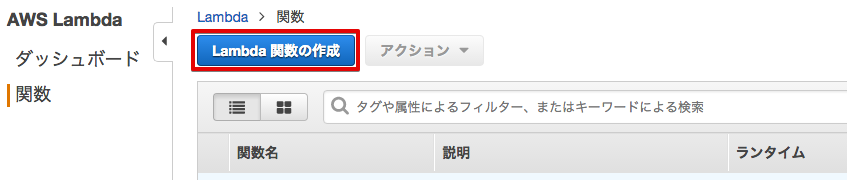Lambda関数の作成画面が表示されるので、[Blunk Function] もしくは、[ブランク関数]をクリックします。
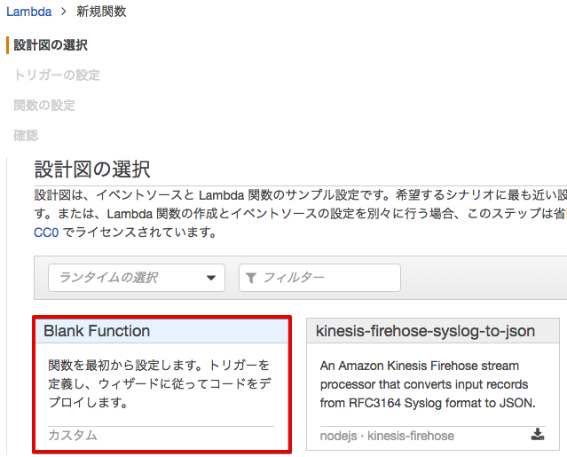トリガーの設定画面が表示されるので、[次へ]をクリックします。
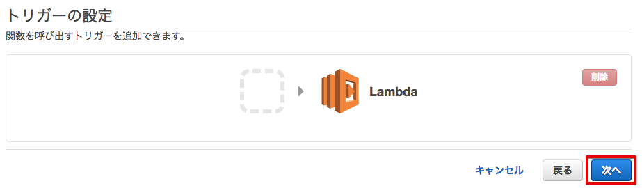ダウンロード済みのLambda関数のZIPファイルをアップロードします。 下記のような画面が表示されるので、必要事項を入力し、[アップロード] ボタンをクリックして、アップロードして下さい。 ロール：[カスタムロールの作成] を選択すると、別画面でIAMの設定画面が出てきますので、設定に従って、ロールの設定を行って下さい。
| 項目 | 設定 |
|---|---|
| 名前 | sensor-raw-data-to-json-mqtt-publish-<参加者番号> |
| 説明 | To convert input raw data from BLE GW to JSON |
| ランタイム | Python 2.7 |
| コード エントリ タイプ | ZIPファイルをアップロード |
| 関数パッケージ | sensor-raw-data-to-json-mqtt-publish.zip (先ほどダウンロードしたもの) |
| ロール | カスタムロールの作成 |
IAMの設定画面では、[新しいIAMロールの作成] を選択し、ロール名を入力し、[ポリシードキュメントを表示] をクリックして下さい。
| 項目 | 設定 |
|---|---|
| IAM ロール | 新しいIAMロールの作成 |
| ロール名 | lambda_awsiot_mqtt_publish-<参加者番号> |
[編集] をクリックし、下記のポリシードキュメントを入力して下さい。[許可] をクリックするとIAMの設定画面は閉じます。
このIAMロールでは、Lambda関数のアクセス権限を設定します。Lambda関数で変換したデータをAWS IoTへパブリッシュするので、AWS IoTへのアクセスを許可し、CloudWatchログへのログの出力を許可しています。
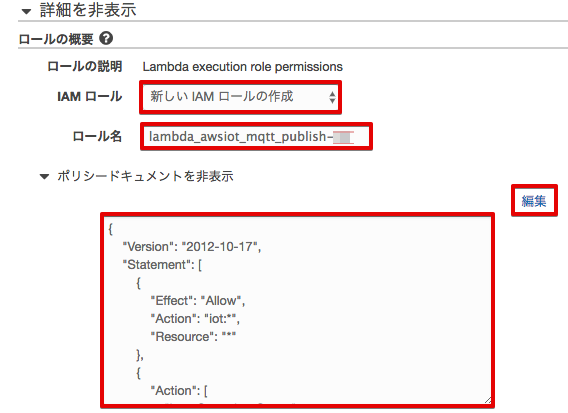{
"Version": "2012-10-17",
"Statement": [
{
"Effect": "Allow",
"Action": "iot:*",
"Resource": "*"
},
{
"Action": [
"logs:CreateLogGroup",
"logs:CreateLogStream",
"logs:PutLogEvents"
],
"Effect": "Allow",
"Resource": "arn:aws:logs:*:*:*"
}
]
}
ロールが[既存のロール] に変更され、ロール名として、”lambda_awsiot_mqtt_publish-<参加者番号>” が表示されていることを確認し、[次へ] をクリックして下さい。
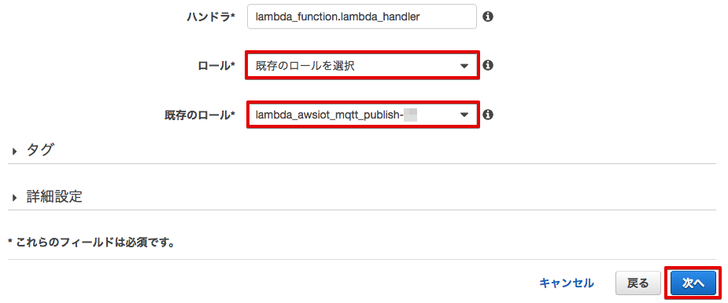確認画面が表示されますので、下までスクロースし、[関数の作成] をクリックして下さい。

Lambda関数の作成に成功すると、下記の様な画面が表示されます。
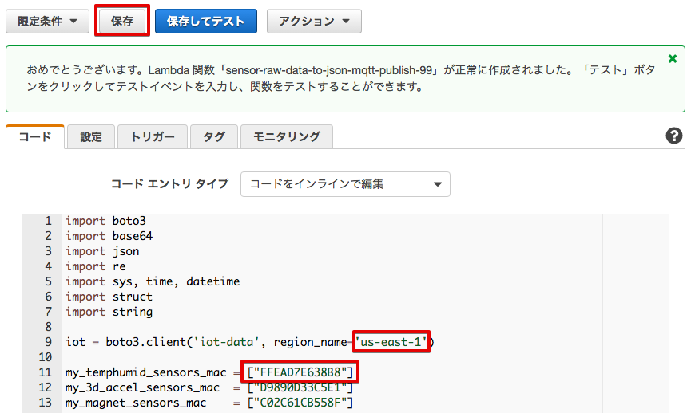Lambda関数内でAWS SDKのboto3をインポートしますが、使用中のリージョンになっているか確認して下さい。(バージニア リージョンの場合、’us-east-1’なので変更の必要はありません。)
目的のセンサーからのデータだけを取り込むために、Lambda関数内の”my_temphumid_sensor_mac” を修正します。 ご自身のセンサーのラベルに記載されているセンサーのMACアドレスに修正し、[保存] ボタンを押して下さい。これによって、ご自身のセンサーのデータだけがLambda関数で処理されるようになります。”,”カンマで区切れば、複数のセンサーの登録も可能です。
 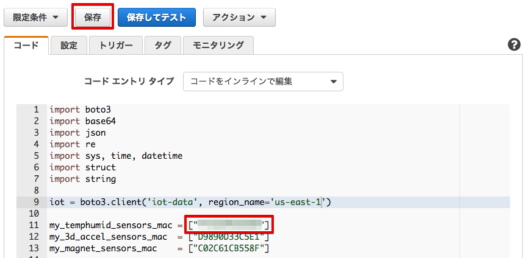
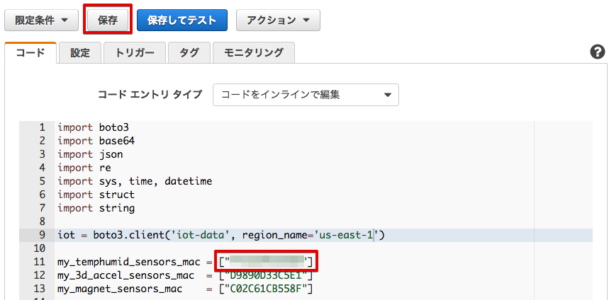
6.2. Lambda起動用のAWS IoT ルールを作成¶
サービス一覧から[AWS IoT]をクリックして開きます。

ルールを作成します。メニューから[Rules]をクリックします。ルール一覧画面で、[Create]をクリックします。

下記の項目を入力し、[Add action]をクリックします。
| 設定項目 | 値 |
|---|---|
| Name | awsiot_lambda_direct_<参加者番号> |
| Attribute | encode(*, ‘base64’) as payload, topic() as topic_name |
| Topic filter | sensor/<参加者番号> |
{
'topic_name': 'sensor/<参加者番号>',
'payload': 'JEdQUlAsRkZFQUQ3RTYzOEI4LEFDODNGM0EwNDFEMiwtNjMsMDIwMTA2MTJGRjU5MDA4MEJDNEUwMTAwMUIwOTJDMDAwMDAwMDAwMDAwMDAsMTQ5NzI1MjM5MQ0K'
}
- ※ レンジャーシステムズ製のBLEゲートウェイが送信するデータは、CSV形式であるため、Lambdaで受け取る事が出来ません。
ルールエンジンの組み込み関数 “Encode()”を使用する事で、非JSONのデータをBase64形式にエンコードする事でJSON形式に変換し、Lambdaに渡せる様になります。 今回は、キー payloadとして、BLE BeaconのPayload(センサーデータ)をエンコードしています。 詳しくは、下記をご参照下さい。 http://docs.aws.amazon.com/ja_jp/iot/latest/developerguide/iot-sql-functions.html
topic() as topic_name は、受信したトピック名 “sensor/<参加者番号>” をキー “topic_name”として、Lambdaに渡しています。 実際にLambdaが受け取っているデータは、下記になります。
{
'topic_name': 'sensor/<参加者番号>',
'payload': 'JEdQUlAsRkZFQUQ3RTYzOEI4LEFDODNGM0EwNDFEMiwtNjMsMDIwMTA2MTJGRjU5MDA4MEJDNEUwMTAwMUIwOTJDMDAwMDAwMDAwMDAwMDAsMTQ5NzI1MjM5MQ0K'
}
“Invoke a Lambda function passing the message data” を選択し、[Confgure action] をクリックします。
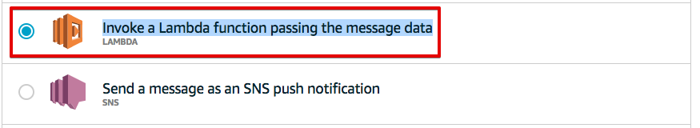 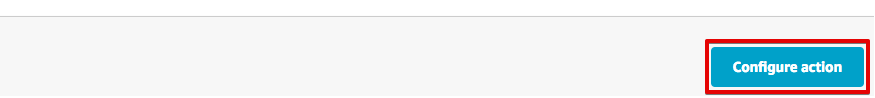Function nameで、sensor-data-to-es-<参加者番号> を選択し、[Add action] をクリックします。 この時点で、
| 設定項目 | 値 |
|---|---|
| Function name | sensor-raw-data-to-json-mqtt-publish-<参加者番号> |
Create a rule画面に戻ります。[Create rule] をクリックして、ルールを作成します。
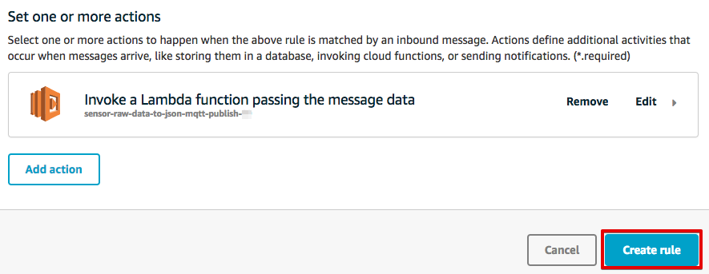6.3. Lambda関数がパブリッシュしたデータを確認する¶
BLEゲートウェイがパブリッシュするトピックは、”sensor/<参加者番号> でしたが、Lambda関数でJSON形式に変換し、トピック名 “sensor/<参加者番号>/json” として、AWS IoTにパブリッシュしています。AWS IoTのテストから、変換されたデータを確認してみましょう。
テスト画面を表示します。AWS IoTのメニューから[Test]をクリックすると下記の画面が表示されます。 “Subscription topic” に “sensor/<参加者番号>/#” と入力し、[Subscribe to topic] ボタンを押します。
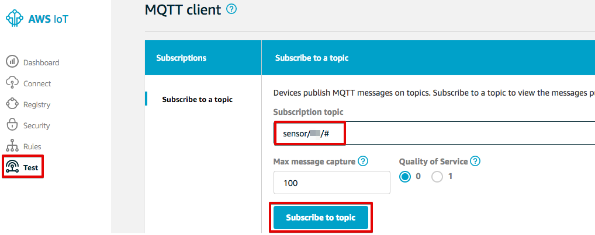左に、sensor/<参加者番号>/# と表示されますので、クリックします。
Lambda関数が正しくデータ変換できていれば、下記の様にトピック名 “sensor/<参加者番号>/json” として、JSON形式に変換されたデータが表示されます。
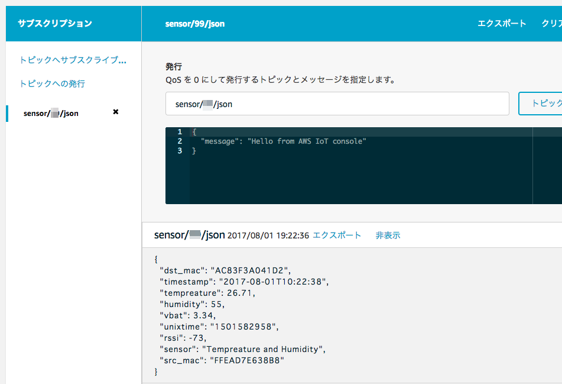JSON形式に変換されたデータ、下記のフォーマットになっています。
{
"dst_mac": "AC83F3A041D2", ← ゲートウェイのMACアドレス
"timestamp": "2017-06-12T06:21:22", ← タイムスタンプ
"tempreature": 23.41, ← 温度
"humidity": 43, ← 湿度
"vbat": 3.34, ← 電池電圧
"unixtime": "1497248482", ← UNIX形式のタイムスタンプ (1970/01/01 00:00:00 UTC) からの経過秒数)
"rssi": -64, ← Beaconの電波強度
"sensor": "Tempreature and Humidity", ← センサーのタイプ
"src_mac": "FFEAD7E638B8" ← センサーのMACアドレス
}
表示されない場合は、Lambda関数内の”my_temphumid_sensor_mac” の修正が間違っていないかなど、確認して下さい。
6.4. Webアプリケーションでデータを確認¶
- 下記のURLをクリックし、WebアプリケーションをPCのWebブラウザで開いて下さい。
- http://awsiot-linechart.s3-website-ap-northeast-1.amazonaws.com
下記のデモ画面が表示されますので、[Auto Refresh with AWS IoT Data]をクリックして、AWS IoTのデータを表示する画面に切り替えて下さい。
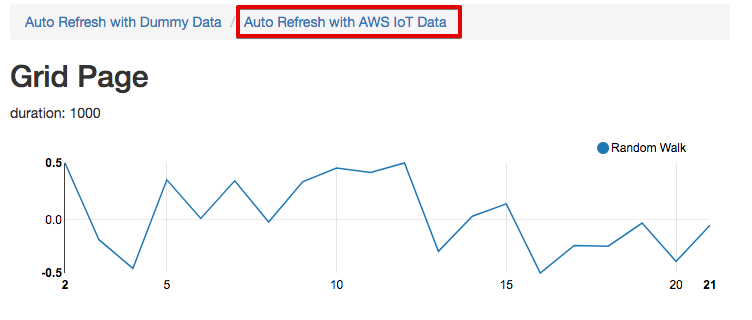AWS IoTのグラフ表示画面が表示されます。
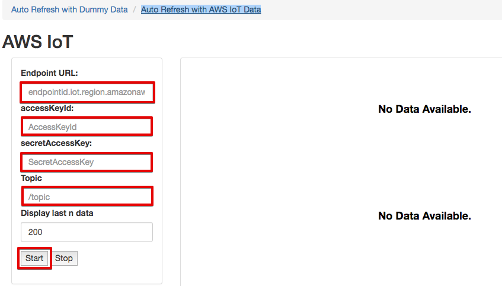エンドポイントやトピック名などの必要事項を入力し、最後に [Start]ボタンを押して下さい。
| 項目 | 値 |
|---|---|
| Endpoint URL | 記録しておいたEndpoint情報 |
| accessKeyId | ユーザーのアクセスキーID |
| secretAccessKey | ユーザーのシークレットアクセスキー |
| Topic | sensor/<参加者番号>/json |
| Display last n data | 200 (グラフに表示する過去のデータ数) |
アクセスキーID、シークレットアクセスキーは、IAMユーザー作成時にダウンロードしたcsvファイルに記録されています。アクセスキーIDは、後から確認できますが、シークレットアクセスキーは、IAMユーザー作成時にしか参照できないので、紛失した場合は、IAMユーザーを新たに作って下さい。
- ※ アクセスキーは、AWSにアクセスするための認証情報です。
- 詳しくは、下記をご参照下さい。 https://aws.amazon.com/jp/developers/access-keys/
暫くすると、温度、湿度のグラフが表示されます。電波強度は、Gatewayが受信したBeaconの電波強度です。 温湿度センサーは、5秒毎にBeaconを送信するため、グラフも5秒周期で更新されます。下の２つのグラフは温度と湿度です。電波強度は、RSSIです。温湿度センサーの位置や確度を変えるだけで
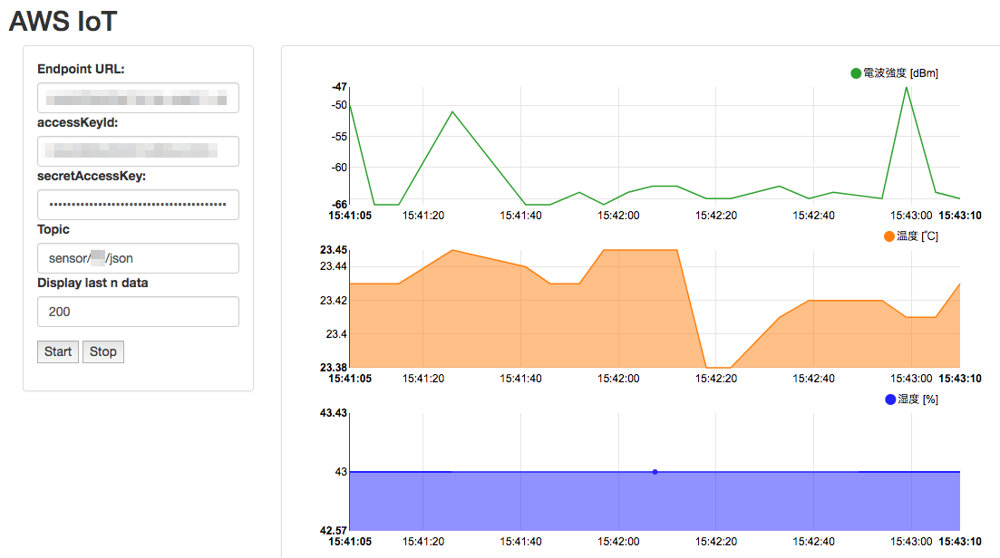